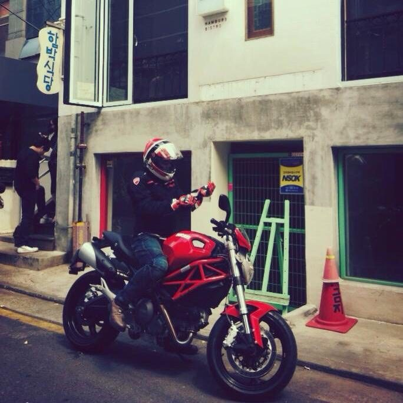

Motorcycles
Motorcycles / 바이크
LPH B-613-02
살아 있음을 확인한 별
방의 첫 문장
더 빨리, 더 멀리, 그리고 더 위험하게. 마흔, 병상에서 정했다. 죽기 전에 하고 싶은 건 하자. 면허도 없이 두카티를 계약했다. 그때 살아 있다는 감각은 아직 내 안에 남았다.
미루지 않는 사람들끼리는 안다. HAM MEDIA의 빨강이 두카티에서 온 건, 그래서다.

바이크의 집
현관에서 대표 사진을 보고, 안쪽 방으로 들어가 글과 사진을 따로 봅니다.
글방
살아 있음을 확인한 기록

사진방
엔진과 속도, 마음에 남은 장면
두카티와 길 위의 흔적


